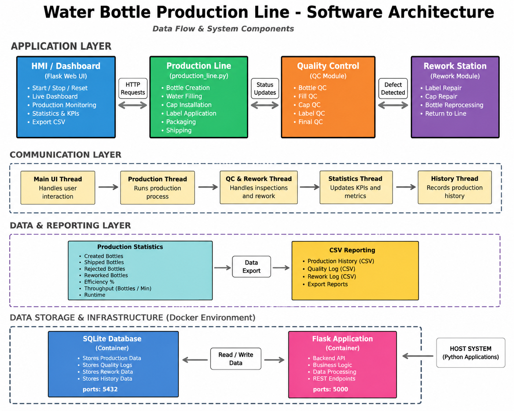

Water Bottle Production Line Simulation
Advanced Programming Final Project

Project Overview
This project is a Water Bottle Production Line Simulation developed as the final project for the Advanced Programming course at SRH University.
The system simulates a complete industrial manufacturing process from bottle creation to final shipment. Bottles pass through multiple production stages including filling, cap installation, labeling, quality inspection, packaging, and shipping.
The application features a real-time Human Machine Interface (HMI) developed using Python Tkinter. Operators can monitor production statistics, track bottle movement through the line, identify defects, manage rework operations, and export production reports.
The project demonstrates Object-Oriented Programming principles, industrial automation concepts, process control logic, quality management systems, and dashboard development.
Key Features
- ✓ Continuous Production Simulation
- ✓ Bottle Creation and Processing
- ✓ Multiple Quality Control Stations
- • Bottle QC
- • Fill QC
- • Cap QC
- • Label QC
- • Final QC
- ✓ Rework Station for Recoverable Defects
- ✓ Automatic Rejection of Critical Defects
- ✓ Real-Time HMI Dashboard
- ✓ Production Statistics and KPIs
- ✓ Production History Tracking
- ✓ CSV Report Export
- ✓ Industrial Manufacturing Workflow Visualization
My Role
Project Developer
Designed and implemented the complete Water Bottle Production Line Simulation using Python.
Developed the Human Machine Interface (HMI) using Tkinter.
Implemented production logic, quality control inspections, defect handling, rework operations, KPI calculations, production history tracking, and CSV reporting.
Created the software architecture, testing procedures, project documentation, and portfolio presentation.
System Architecture
The project follows a layered architecture consisting of a Human Machine Interface (HMI) layer and a Production Logic layer.

System Architecture Diagram — HMI Layer & Production Logic Layer
🖥️ HMI Layer (Human Machine Interface)
Provides monitoring and control functionality for operators. Displays real-time production data, statistics, quality metrics, and system status.
⚙️ Production Logic Layer
Manages bottle processing, quality control stations, rework operations, production statistics, and CSV reporting.
This separation improves maintainability, scalability, and code organization.
Object-Oriented Programming Concepts
📦 Core Classes
- • Bottle — Represents individual bottle objects with properties (ID, status, defects, stage)
- • ProductionLine — Manages the complete production workflow, stations, and bottle routing
- • WaterBottleHMI — Handles the graphical interface, event processing, and dashboard updates
- • QualityControl — Implements inspection logic and defect classification
- • ReportManager — Handles CSV export, production history, and statistics generation
🔧 OOP Principles Applied
- • Encapsulation — Each class encapsulates its own data and behavior (e.g., Bottle manages its own state)
- • Composition — ProductionLine is composed of multiple station objects and Bottle collections
- • Abstraction — HMI abstracts complex production logic behind simple interface methods
- • Modular Design — Separation of concerns between HMI, logic, and data layers enables independent testing
Production Workflow
↻ Rework Station Path:
Bottle QC → Fill QC → Cap QC → Label QC → Rework Station
Project Gallery
Screenshots from HMI V6 showing various system states and dashboards.